Logo
Banner
Artistas
Karaoke
Inicio de sesion
Registrar
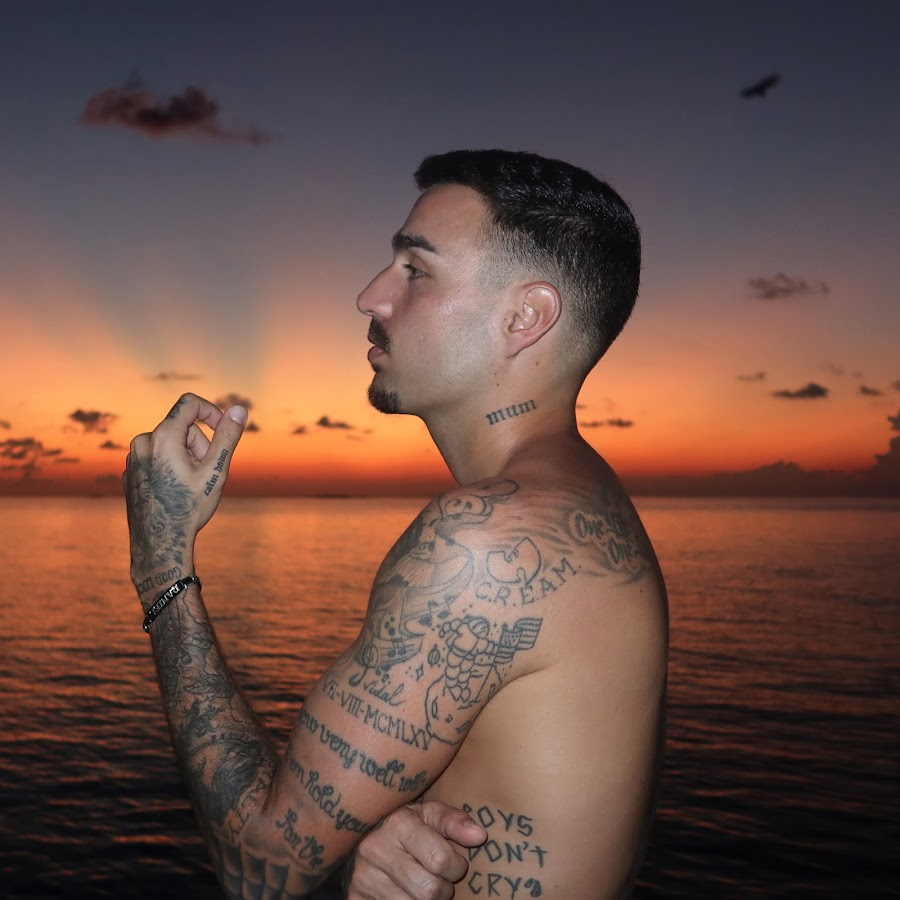
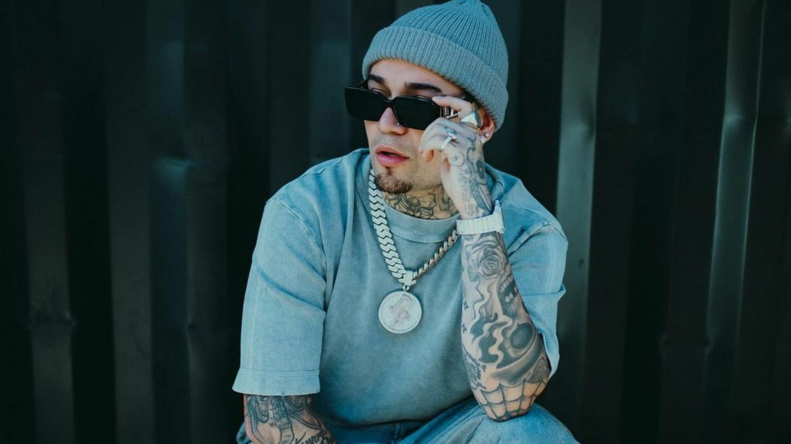
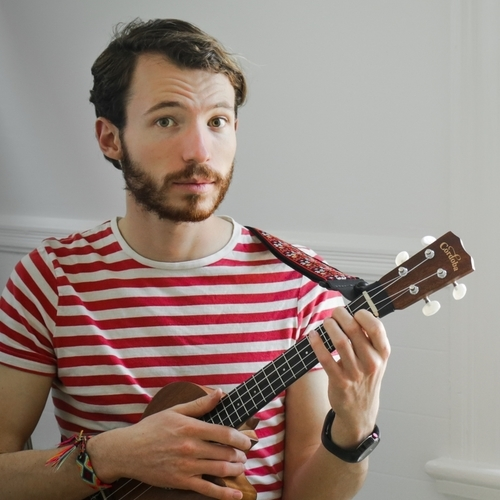
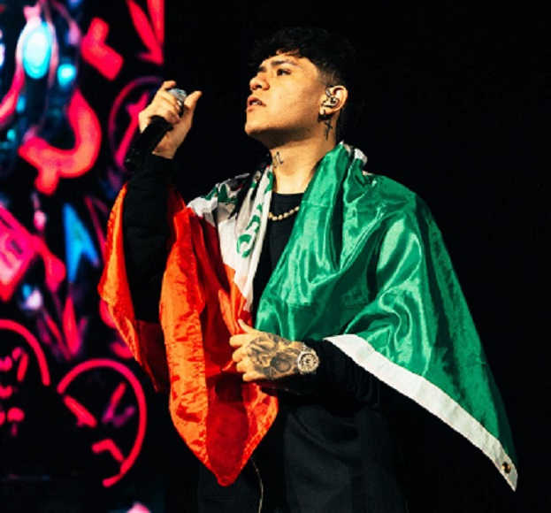
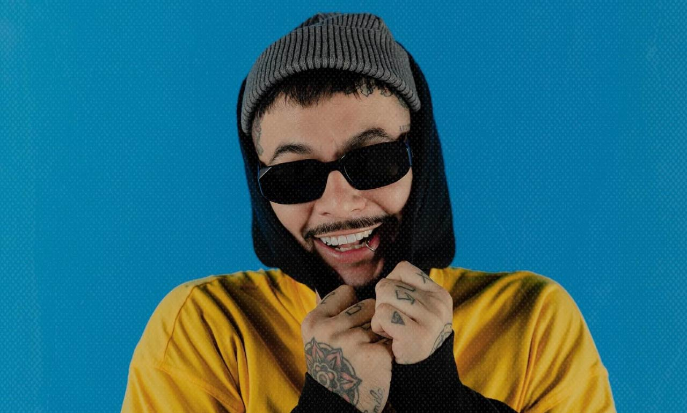
....................................................................................................................... ..................................................................................................................... Cuánto tiempo que ha pasado ......... Y, todavía, no te he olvidado ........... Tomamo' camino' que fueron separado' ......................... Pero, ........................... pero. ................... Últimamente ando demasia'o loco Miro a la gente y solo veo tu rostro Nuca decidimo' separarno, ' pero, bueno, acá estamo' Intentando olvidarno' de todo Y si te digo que me encuentro muy mal ........ Y si te digo que no puedo olvidar To' lo vivido cuando estuve a tu la'o Y si te digo, y si te digo .................................. Y si te digo que no me voy de acá Hasta que me mire' como meses atrás Todo este vacío, no se me va a sanar Si no te tengo para la eternidad Sé que nos peleamo', sí que nos odiamo' Pero, no podemo' negar, que sí nos amamos Esto ya no e' sano, claro que te extraño Siento que mi vida, sin tu amor, es un fracaso Y estoy pensando, muy desesperado El tiempo que perdí por orgulloso, enojado Tuve mis errores, eso me hace humano Pero, afrontar no me hace alguien dedicado Y eso que ahora hablan, hablan (Oh) Déjalo' que mueran de rabia, rabia (Yeh) Ello' buscan derrumbar lo nuestro Porque lo suyo nunca le' va bien (Nunca le' va bien) Y eso que ahora hablan, hablan (Oh) Déjalo' que mueran de rabia, rabia (Yeh) Ello' buscan derrumbar lo nuestro Porque lo suyo nunca le' va bien, ey Últimamente ando demasia'o loco Miro a la gente y solo veo tu rostro Nunca decidimo' separarno, ' pero bueno, acá estamo' Intentando olvidarno' de todo Y si te digo que me encuentro muy mal Y si te digo que no puedo olvidar To' lo vivido cuando estuve a tu la'o Y si te digo, y si te digo Y si te digo que no me voy de acá Hasta que me mire' como meses atrás Todo este vacío no se me va a sanar Si no te tengo para la eternidad ............................................................................... O-O-Ovy On The Drums
Yo tengo un ángel Que me protege de los envidiosos Y ese ángel me protege y no le importa si yo soy un vicioso Yo tengo un ángel que siempre está detrás de mí Y un ejercito e' guerreros Y ese ángel me protege de los que no son sinceros Comienza el drama Me levanto de la cama Me cepillo los dientes Y miro el sol salir Prendo una vela con mucha cautela Y afuera escucho el barrio sin saber quién va a morir Y es que el destino no está escrito Lo escribimos nosotros A nosotros nos toca el destino escribir Y aunque la vida esté dura Y el gobierno la empeore A nosotros nos toca decidir Hay días en que yo cruzó el barrio En pleno tiroteo, él va detrás de mí Si me aborrezco a veces de estar vivo Y pierdo la esperanza, él va detrás de mí Si me confundo y pierdo la fé A medio caminar el ángel me dice a mí "Levántate e' la cama y enfréntate a La vida porque tu naciste pa' sobrevivir" Yo tengo un ángel Que me protege de los envidiosos Y ese ángel me protege y no le importa si yo soy un vicioso Yo tengo un ángel que siempre está detrás de mí Y un ejercito e' guerreros Y ese ángel me protege de los que no son sinceros Y les confieso que lo antes descrito en este verso Es el relato del dolor que me quería partir los huesos Como todo ser humano he tenido mis tropiezos Pero el ángel me acompaña aunque no me quedé un peso Su protección no tiene precio Va mas allá de lo real, espiritual, sé que no me va a fallar Él me ha visto reír pero también llorar Cada cual con su ángel, con su forma de bregar Hay días en que yo cruzó el barrio En pleno tiroteo, él va detrás de mí Si me aborrezco a veces de estar vivo Y pierdo la esperanza, él va detrás de mí Si me confundo y pierdo la fe A medio caminar el ángel me dice a mí "Levántate e' la cama y enfréntate a La vida porque tu naciste pa' sobrevivir Levántate e' la cama y enfréntate a la Vida porque tu naciste pa' sobrevivir" Yo tengo un ángel Que me protege de los envidiosos Y ese ángel me protege y no le importa si yo soy un vicioso Yo tengo un ángel que siempre está detrás de mí Y un ejercito e' guerreros Y ese ángel me protege de los que no son sinceros Mi ma'e siempre me decía que yo tenía un ángel Oye, que siempre me estaba protegiendo Y ahora me doy cuenta que e' verdad Yo no soy el único, todo el mundo tiene un ángel detrás de el Lo que tiene e' que hay que conocerlo y echar pa'lante en la vida Este es el Gallego, teatro del barrio Hay días en que yo cruzó el barrio En pleno tiroteo, él va detrás de mí Si me aborrezco a veces de estar vivo Y pierdo la esperanza, él va detrás de mí Si me confundo y pierdo la fé A medio caminar el ángel me dice a mí "Levántate e' la cama y enfréntate a La vida porque tu naciste pa' sobrevivir Levántate e' la cama y enfréntate a la Vida porque tu naciste pa' sobrevivir"
El rojo es tu color, resalta tus ojos irritados Escucha, estuve pensando (Ah, ¿sí?) El porqué hacemos tan buena pareja (¿Por qué?) Oye, tú, mami, ¡oye! Ven y sírveme un café temprano Toqué hasta noche y la gira que no acabamos Me quedan varias fechas para el cierre de este año Lejos de la familia, tanto que me volví extraño Mas, de lejos, represento; claro, siempre los extraño Adicto a lo prohibido, aquí no gusta si hace daño Voy de ciudad en ciudad cantando, pintando los baños Me festejo cada viernes como si cumpliera años A ella se la cuidé bien, creo más de lo que debía Me atrapó a primer sonrisa dentro en la cafetería Me dio un beso en la mejilla que no olvido, todavía Me contó toda su vida mientras se acababa el día Dijo que en dos semanas en el teatro bailaría Que tal vez, y así de pronto, puede que me invitaría Sonreí mientras pensaba que solo fue cortesía Pues, esa cintura y yo, ¿quién chingados lo creía? Preguntó con sutileza si me juntaba con locos Yo hace mucho que no miento, le dije que solo un poco Mas, todos tienen poderes, fíjate bien cuando toco Me dijo, sin problemas: "cuídame si me equivoco" Hablaba que provoco, pasamos a nuevos términos Pensaba en si la beso y, mira, me salió con éxito Nadie me patrocina, mami, todo fue mi mérito Solo me logran ver la silueta en el camerino Dijo que está encantada por mi actitud de malote Y a mí lo que me estresa es que lo malo no lo note La enseñé cómo prenderse sin miedo en la calle un toque Y nadie le ve las nalgas cuando camina en mi bloque Dame más (Dame la última y nos vamos) Ya no estás (Sirve mi café temprano) Dame más (Dame la última y nos vamos) Ya no estás (Sirve mi café temprano) Trató de seguirme el paso, hasta la cambié de modo Me dijo que beso a beso, y en la vida codo a codo Ella quiso ser mi reina, pero la calle es mi trono Y la vida es tan celosa que el amor lo vuelve polvo Claro que quise ser firme, traté de dejarlo todo Mas, el pasado me arrastra, y también me cuida el apodo Problemas que te hacen nudos, hasta mal salí con socios Me metió a vivir la fiesta, me hizo fallar al negocio Así fue el tiro de gracia que pensé para Cupido Pues, solo por billetes y gangster deja su nido Me fui con las alas rotas y con el orgullo herido Pues, ella quería más droga y yo solo tocar en vivo Me di cuenta que a la mala yo me volví su enemigo Pues, nada le faltaba, la reina vivía conmigo Tenía ropa de diseño, diamantes y joyería Y si pedía polvito, era porque amanecía Una tarde preguntó que si ya no la quería Y solo respondí: "tengo que seguir la vía" Ella piensa que fue engaño, hasta la fecha de hoy en día Pero aquí está la verdad, sentía que se me moría Yo', sentía que se me moría Sentía que se me moría Me gustaría pedirte lo que quiero Pero solo porque tú no me lo has pedido ¿Quieres hacer una...? La vida es una serie interminable de desastres Con grandes comerciales Este había sido el mejor corte comercial Ha llegado el momento de volver a nuestra programación Dame más (Dame la última y nos vamos) Ya no estás (Sirve mi café temprano) Dame más (Dame la última y nos vamos) Ya no estás (Sirve mi café temprano)
Dame de tu vida y de tu tiempo Suficientes para ver Dentro de tus ojos el momento Que me obligue a renacer Dame vida y dame aliento Que yo ya perdí el conocimiento Solo quédate un momento Hasta evaporarnos en el viento No hay motivos Para decirnos adiós tan pronto Sigo vivo Créemelo, mi amor No soy tan tonto Si tú quisieras esta noche Ir a bailar un chachachá Yo te puedo enamorar Dame de tu vida y de tu tiempo, oh oh Que te quiero conocer Déjame sentir el movimiento, oh oh De tu cuerpo al florecer Dame vida y dame aliento Que yo ya perdí el conocimiento Solo quédate un momento Hasta evaporarnos en el viento No hay motivos Para decirnos adiós tan pronto Sigo vivo Créemelo, mi amor No soy tan tonto Si tú quisieras esta noche Ir a bailar un chachachá Yo te puedo enamorar No hay motivos Para decirnos adiós tan pronto Sigo vivo Créemelo, mi amor No soy tan tonto Si tú quisieras esta noche Ir a bailar un chachachá Yo te puedo enamorar
Tu navegador no soporta la etiqueta de video.
No hay mensajes de mi amor, esa niña ya cambió No supe ni cómo fue, tan solo no la miré Y poco a poco, bebé, tú te me alejabas más Ya no quise ni entender el por qué ahora ya no estás Y lloro Ven, te juro que me siento solo Y aunque a veces a la noche imploro Que vuelvas porque ahora me siento solo Aunque a veces tomando no la aguanto Y me dice que no será pa' tanto Y yo intentando contener mi llanto Haciendo como que no duele tanto Puro Junior H Cómo no Te fuiste sin dar razón, me dio un beso y se marchó Pensé todo estaba bien, pero creo que así no fue Si de mí todo entregué y siempre me han pagado mal El cora que te regalé lo dejaste en mi casa Y lloro Ven, te juro que me siento solo Y aunque a veces a la noche imploro Que vuelvas porque ahora me siento solo Y aunque a veces tomando no la aguanto Y me dice que no será pa' tanto Y yo intentando contener mi llanto Haciendo como que no duele tanto
Por lo bien que te ves Que te ves, mami, cuando estoy empapelado Y hace un mes que te besé Son cinco pa' las diez y tú no has llegado Y si por ahí tú me ves Bailando en la lluvia un poco drogado Y si no sabes qué hacer Preguntale a mis amigos, ellos me han cuidado Por lo bien que te ves Que te ves, mami, cuando estoy empapelado Y hace un mes que te besé Son cinco pa' las diez y tú no has llegado Y si por ahí tú me ves Bailando en la lluvia un poco drogado Y si no sabes qué hacer Pregúntale a mis amigos, ellos me han cuidado Yo estaba ahí de vacilón Si se me mete en la cabeza qué lio Voy justo después de un jalón Por eso me ves algo lento y sombrio Yo, con mis ojeras, mis líos Tú, tú y tus caderas, Dios mío Ay, si me la compras me río Si vas a bailar que sea conmigo Dile al chico de las apuestas Que voy 100 por ciento all in Diles que la suerte está puesta Que tú me vas a elegir Y si tu amiga no se enfiesta Solo mándala a dormir Que mañana que amanezca Vas a querer repetir Vas a recordar la noche Mi nombre, mi cara, el tiempo, la music Mis gestos, lo mal que bailo, mis ganas Tus ganas, sabes solo es eso ritmo y movimiento Sí me gustas por supuesto Te escribo una rola, te hago un monumento Estoy que me caso contigo Me bautizo en frío te juro en este momento Por lo bien que te ves Que te ves, mami, cuando estoy empapelado Y hace un mes que te besé Son cinco pa' las diez y tú no has llegado Y si por ahí tú me ves Bailando en la lluvia un poco drogado Y si no sabes qué hacer Pregúntale a mis amigos, ellos me han cuidado Por lo bien que te ves Que te ves, mami, cuando estoy empapelado Y hace un mes que te besé Son cinco pa' las diez y tú no has llegado Y si por ahí tú me ves Bailando en la lluvia un poco drogado Y si no sabes qué hacer Pregúntale a mis amigos, ellos me han cuidado Este no es el momento ni el lugar, Don La próxima vez haz una cita Bueno, pero mira, hay algo muy importante Sobre lo que quiero hablarte, chica Así que, ¿por qué no tomamos un par de tragos? Actuamos normal y te quedas tranquila Por lo bien que te ves Que te ves, mami, cuando estoy empapelado Y hace un mes que te besé Son cinco pa' las diez y tú no has llegado Y si por ahí tú me ves Bailando en la lluvia un poco drogado Y si no sabes qué hacer Preguntale a mis amigos, ellos me han cuidado Por lo bien que te ves Que te ves, mami, cuando estoy empapelado Por lo bien que te ves Que te ves, mami, cuando estoy empapelado
Iniciar Sesión
Usuario:
Contraseña:
Iniciar Sesión
Registrarse
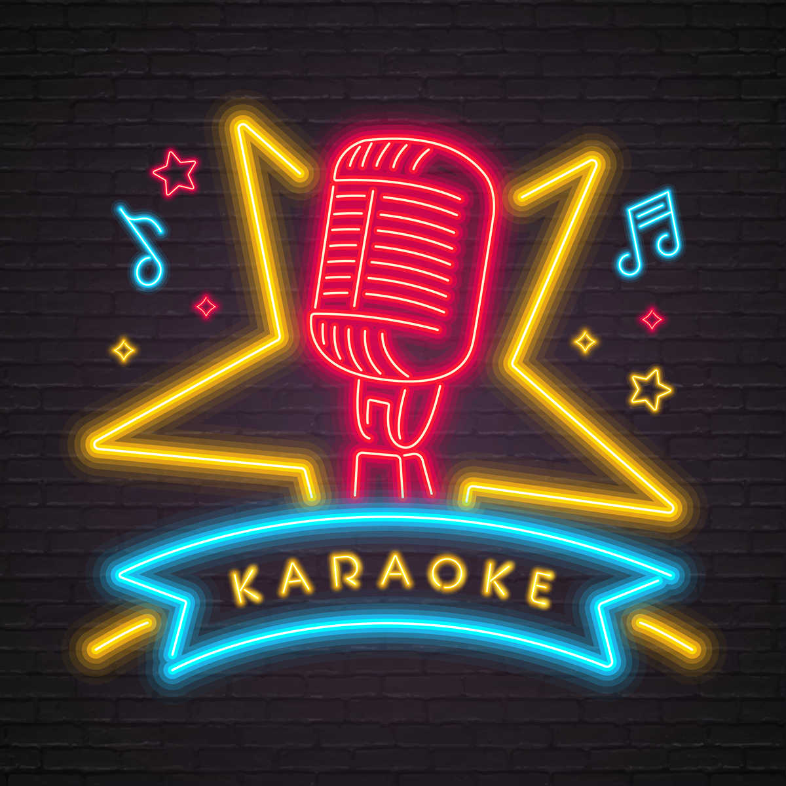
Registro
Nombre:
Correo:
Contraseña:
Registrar
Iniciar Sesión
 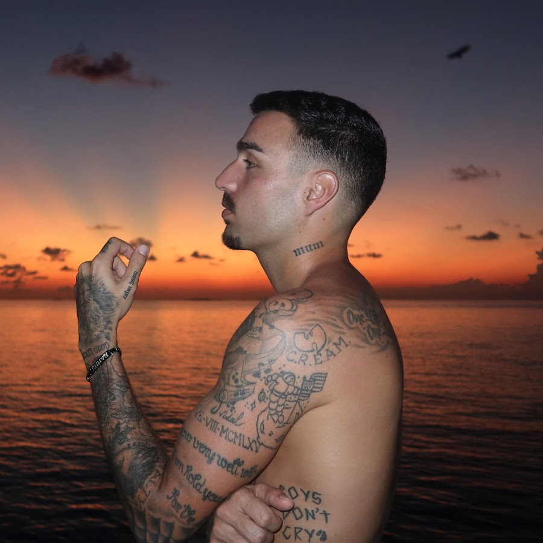
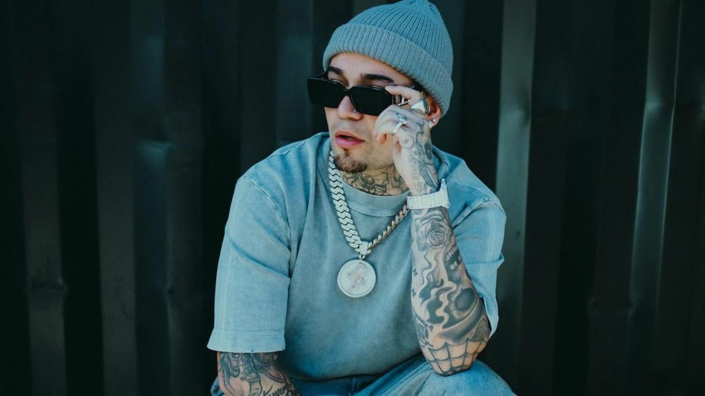
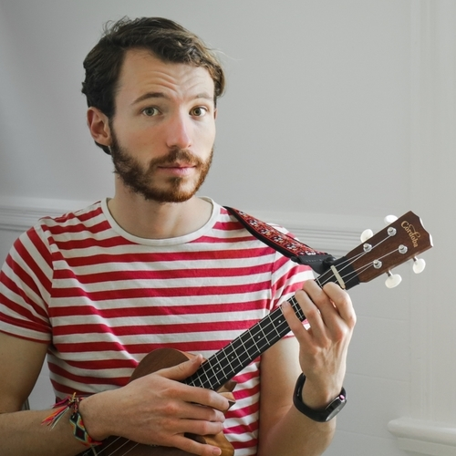
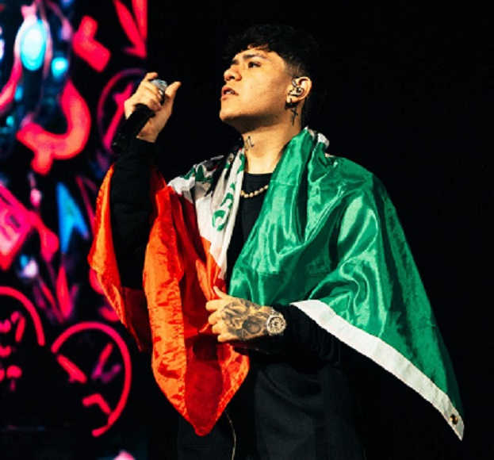
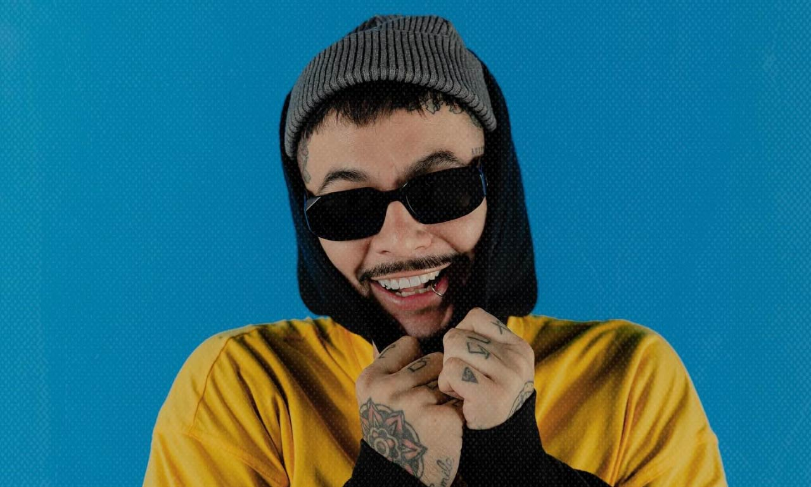
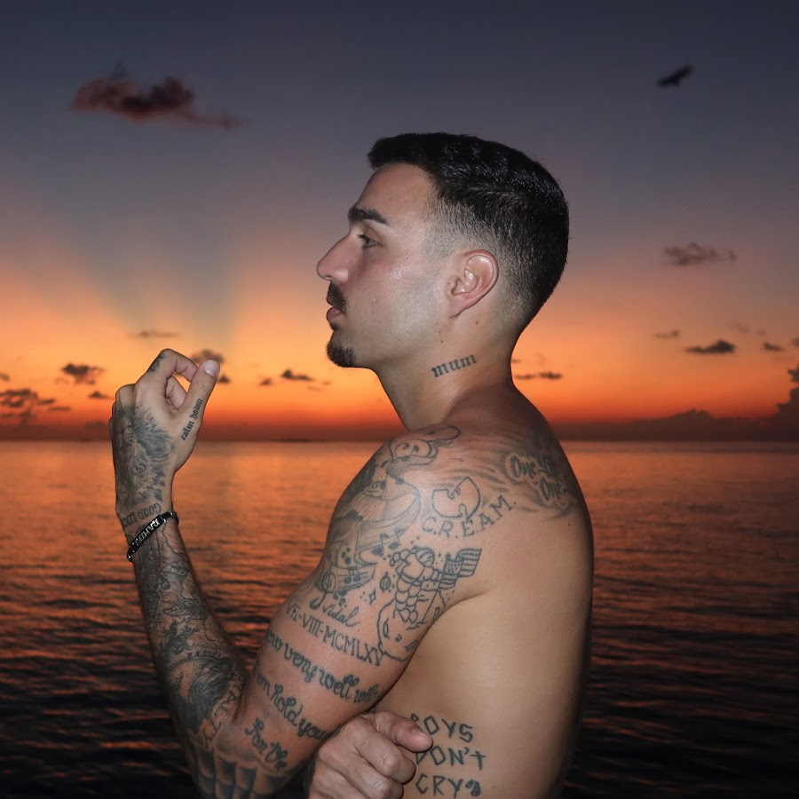
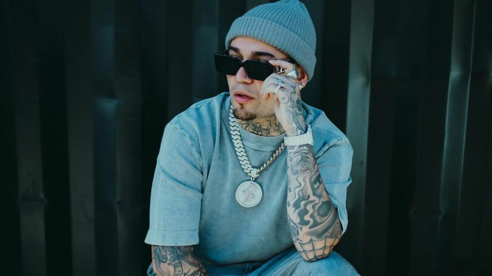
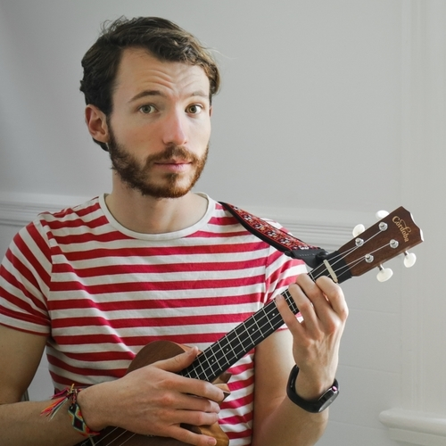
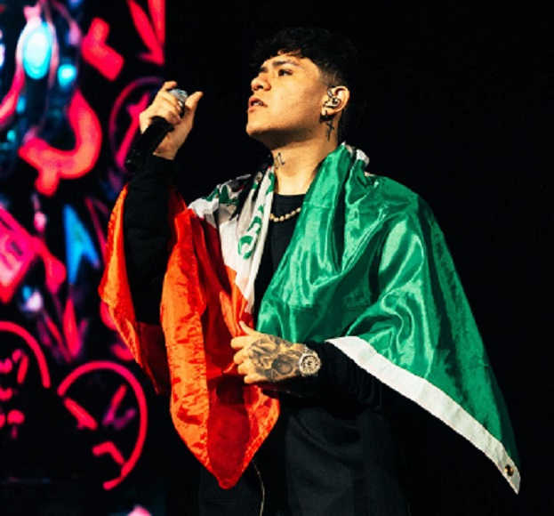
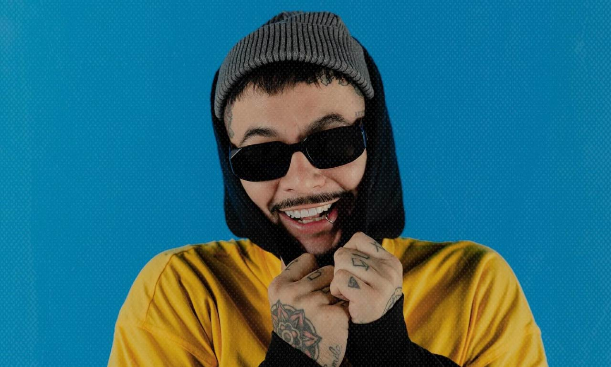